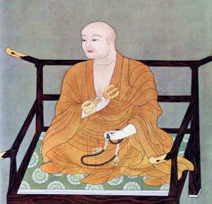
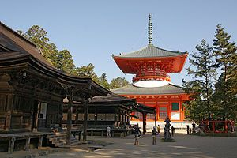
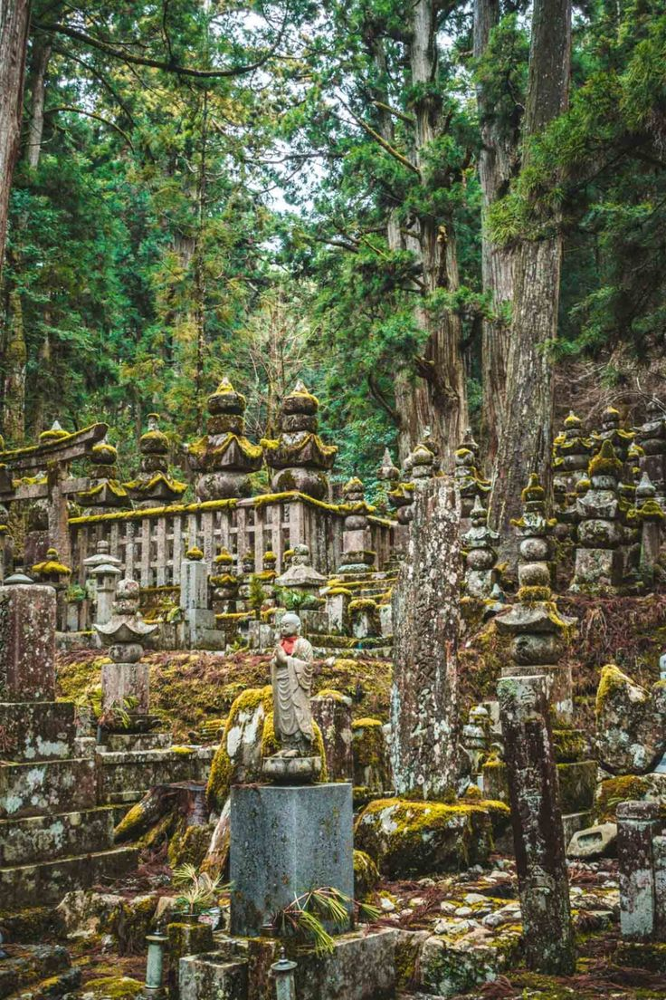

Who Was Kūkai?

Kūkai (774–835), also known by the posthumous title Kōbō Daishi, was a Japanese Buddhist monk, scholar, writer, and religious thinker of the early Heian period. He is best known for developing Shingon Buddhism, an important form of Japanese esoteric Buddhism.
Kūkai's thought focused on Buddhist awakening, the nature of reality, language, ritual, meditation, and the possibility of realizing Buddhahood within one's present existence. His teachings brought together Buddhist philosophy, esoteric practices, symbolism, and theories of language and knowledge.
Kūkai also played an important role in the religious and intellectual history of Japan. He established Mount Kōya as a major center for Shingon Buddhist practice and learning, while his writings became influential in the development of Japanese Buddhist thought and culture.
Kūkai: Life, Philosophy, and Key Facts
- Name — Kūkai (空海)
- Also known as — Kōbō Daishi
- Born — 774
- Died — 835
- Country — Japan
- Period — Early Heian period
- Tradition — Esoteric Buddhism
- School associated with him — Shingon Buddhism
- Major center — Mount Kōya
- Known for — Buddhist philosophy, esoteric practice, meditation, language, calligraphy, and religious education
- Major philosophical concern — The realization of Buddhahood and the nature of reality
Kūkai and Buddhism in Heian Japan

Kūkai lived during the early Heian period, a time when Buddhism was becoming deeply connected with Japanese religious, political, intellectual, and cultural life. Buddhist schools that had developed in China and Korea had already influenced Japan, and Kūkai became one of the major figures responsible for developing a distinct Japanese tradition of esoteric Buddhism.
As a young man, Kūkai studied classical learning and Buddhist teachings. He eventually became dissatisfied with limiting his search for truth to conventional intellectual education and turned more deeply toward Buddhist practice.
His intellectual development eventually led him toward esoteric Buddhism, particularly teachings associated with Indian and Chinese Buddhist traditions. His encounter with esoteric Buddhist texts became decisive for the development of his later religious philosophy.
What Is Shingon Buddhism According to Kūkai?
Shingon Buddhism is a Japanese tradition of esoteric Buddhism associated with Kūkai. The Japanese word Shingon means "true word" and refers to the use of mantra as an important part of Buddhist practice.
Kūkai understood esoteric Buddhism as a profound path to awakening that involved not only intellectual understanding but also the transformation of body, speech, and mind through Buddhist practice.
Shingon practice therefore includes meditation, ritual, sacred formulas, visualization, mudrās, and contemplation. These practices are intended to bring the practitioner into a deeper realization of the awakened nature of reality.
Kūkai and the Three Mysteries of Shingon Buddhism
One of the central features of Shingon practice is the doctrine of the Three Mysteries, traditionally understood as the activities of the Buddha's body, speech, and mind.
Body
The body is involved in Buddhist practice through ritual gestures, particularly mudrās. These gestures symbolically participate in the enlightened activity of the Buddha.
Speech
Speech is represented through the recitation of mantras, sacred formulas associated with Buddhist deities and teachings. The term Shingon itself refers to the importance of "true words."
Mind
The mind is trained through meditation and visualization. The practitioner focuses attention and cultivates awareness of the enlightened reality represented in esoteric Buddhist practice.
The Three Mysteries are practiced together rather than treated as completely separate activities. Their purpose is to bring the practitioner's body, speech, and mind into alignment with the awakened activity of the Buddha.
Kūkai and Buddhahood in This Very Body
One of the most important ideas associated with Kūkai is sokushin jōbutsu, commonly translated as "attaining Buddhahood in this very body."
The teaching emphasizes that Buddhahood is not necessarily something that must remain infinitely distant from ordinary human existence. Through appropriate Buddhist practice, awakening can be realized within one's present embodied existence.
This idea reflects the distinctive character of Kūkai's esoteric Buddhism. Rather than treating the body as simply an obstacle to spiritual realization, Shingon practice makes the body, speech, and mind themselves part of the path toward awakening.
Kūkai, Mahāvairocana Buddha, and the Nature of Reality
Kūkai's Shingon philosophy gives a central role to Mahāvairocana Buddha, known in Japanese as Dainichi Nyorai. Mahāvairocana represents the universal and all-encompassing dimension of Buddhahood within Shingon thought.
Kūkai's philosophy presents reality not as something completely separate from Buddhahood. Instead, the world can be understood as participating in the activity and expression of the Buddha.
This understanding is closely connected with Kūkai's interpretation of esoteric Buddhist teachings and his effort to explain how ordinary experience can become a field for realizing enlightenment.
Kūkai's Philosophy of Language and Reality
Language occupies an important place in Kūkai's philosophical thought. He explored the relationship between words, sounds, symbols, and reality in the context of Buddhist esoteric teachings.
For Kūkai, sacred language was not merely a collection of ordinary labels attached to objects. Mantras and Buddhist symbols could participate in the manifestation and communication of Buddhist truth.
This is one reason why speech is so important within the Three Mysteries. The spoken word becomes part of a larger religious practice involving body, mind, meditation, ritual, and realization.
Kūkai and Mount Kōya: Why Is Kōyasan Important?

Mount Kōya, or Kōyasan, became one of the central locations of Kūkai's Buddhist tradition. Kūkai received imperial permission to establish a Buddhist center there in the early ninth century and developed the mountain as a major place for Shingon practice and learning.
The mountain's secluded environment was particularly suitable for Buddhist meditation and religious training. Over time, Kōyasan developed into one of the most important centers of Japanese esoteric Buddhism.
Kōyasan remains strongly associated with Kūkai and the Shingon tradition. The Kōyasan Shingon tradition identifies Mount Kōya and Kūkai's mausoleum at Okunoin as central parts of its religious heritage. :contentReference[oaicite:1]{index=1}
Kūkai's Main Philosophical Ideas
Kūkai's philosophy combines Buddhist metaphysics, religious practice, language, meditation, and theories of enlightenment. Several themes are particularly important for understanding his thought.
Esoteric Knowledge
Kūkai distinguished esoteric Buddhist teachings from teachings that communicate Buddhist truth in more accessible or conventional forms. He regarded esoteric practice as a profound means of realizing the deeper dimensions of Buddhist reality.
Buddhahood in This Very Body
Kūkai emphasized the possibility of attaining Buddhahood through practice within one's present embodied existence.
Body, Speech, and Mind
Kūkai's understanding of Buddhist practice gives an important role to the transformation and integration of body, speech, and mind.
Language and Sacred Sound
Mantras, words, sounds, and symbols are important components of Shingon practice and Kūkai's understanding of Buddhist truth.
Reality and Buddhahood
Kūkai's philosophy presents the awakened reality represented by Mahāvairocana Buddha as deeply connected with the world and with the possibility of human enlightenment.
Kūkai's Ten Stages of Mind
Kūkai developed a systematic account of different levels of religious and philosophical development in his work Jūjūshinron, commonly known as The Ten Stages of the Development of Mind.
The work compares different approaches to spiritual and philosophical development and places esoteric Buddhism at the highest stage in his system.
The Ten Stages should not be understood simply as a ranking of individual people. Kūkai was constructing a philosophical and religious classification of different understandings of the mind, reality, ethics, and spiritual practice.
What Did Kūkai Write?
Unlike many ancient philosophers whose writings survive only in fragments, a substantial body of Kūkai's writings has been preserved. His works address Buddhist philosophy, religious practice, language, education, and the organization of Buddhist teachings.
Major Works Associated with Kūkai
- Jūjūshinron — commonly translated as The Ten Stages of the Development of Mind.
- Hizō Hōyaku — a major work explaining esoteric Buddhist teachings.
- Sokushin Jōbutsugi — a work explaining the possibility of attaining Buddhahood in one's present body.
- Shōji Jissōgi — a work concerning language, words, and the nature of reality.
These works are important for understanding how Kūkai developed a systematic intellectual framework for Japanese Shingon Buddhism.
Kūkai, Education, and Japanese Culture
Kūkai's influence was not limited to Buddhist religious practice. He was also an important figure in the intellectual and cultural history of Japan.
He was associated with scholarship, literature, calligraphy, and education. His intellectual interests demonstrate the broad scope of his activities beyond strictly doctrinal Buddhist writing.
Kūkai is also traditionally associated with the development of Shugei Shuchi-in, an educational institution that sought to provide learning without restricting education to a narrow social group.
Kūkai and Japanese Calligraphy
Kūkai is traditionally remembered as one of the great figures of Japanese calligraphy. His cultural influence therefore extends beyond Buddhist philosophy into the history of Japanese writing and artistic expression.
His reputation in calligraphy became closely connected with the cultural image of Kōbō Daishi, and later Japanese traditions remembered him as one of the major masters of the art.
His interest in language and writing also fits naturally with his broader philosophical concern with the relationship between words, symbols, sound, and reality.
Kūkai's Journey to China and the Development of Shingon Buddhism
Kūkai traveled to China during the Tang dynasty as part of a Japanese mission. During his time in China, he encountered advanced forms of esoteric Buddhism and studied under Buddhist teachers.
One of the most important figures in his development was the Chinese Buddhist master Huiguo, who transmitted esoteric Buddhist teachings to Kūkai.
Kūkai returned to Japan with Buddhist texts, ritual knowledge, and teachings that became foundational for the development of Japanese Shingon Buddhism.
Was Kūkai a Philosopher?
Kūkai is primarily remembered as a Buddhist monk and religious thinker, but his writings contain substantial philosophical arguments concerning reality, knowledge, language, consciousness, and spiritual development.
His work therefore occupies an important position in the history of Japanese philosophy as well as the history of Japanese Buddhism.
Rather than separating philosophy from religious practice completely, Kūkai treated intellectual understanding, meditation, ritual, and realization as interconnected aspects of the Buddhist path.
Kūkai's Influence on Japanese Philosophy and Buddhism
Kūkai became one of the most influential figures in the history of Japanese Buddhism. His development of Shingon Buddhism created a lasting religious and intellectual tradition that continued long after his death.
His ideas influenced Japanese understandings of meditation, ritual, language, art, literature, education, and the relationship between human beings and the Buddhist conception of reality.
Kūkai's influence is also visible in the continuing importance of Kōyasan, which remains one of Japan's major centers associated with Shingon Buddhism.
What Do We Know About Kūkai?
Kūkai is considerably better documented than many ancient Greek philosophers because a substantial body of his writings survives and historical traditions about his life developed relatively early.
Well Established
- Kūkai lived during the early Heian period of Japanese history.
- He became an important figure in the development of Japanese esoteric Buddhism.
- He traveled to China and studied esoteric Buddhist teachings.
- He became associated with the establishment of Kōyasan as a major center of Shingon Buddhism.
- He wrote important Buddhist philosophical and religious works.
Important Traditional Associations
- His posthumous title Kōbō Daishi.
- His reputation as a master of Japanese calligraphy.
- His continuing association with Mount Kōya and Okunoin.
- The extensive religious traditions surrounding his later veneration.
Kūkai Explained Simply
Kūkai was a Japanese Buddhist monk and thinker who developed Shingon Buddhism, an important form of Japanese esoteric Buddhism.
His philosophy taught that Buddhist awakening could be realized through practices involving the body, speech, and mind. Rather than treating enlightenment as something completely separate from ordinary existence, Kūkai emphasized the possibility of attaining Buddhahood in one's present body.
- Who was he? — A Japanese Buddhist monk, scholar, writer, and religious thinker.
- What is he famous for? — Developing Japanese Shingon esoteric Buddhism.
- What did he teach? — A path toward awakening involving body, speech, mind, meditation, mantra, and esoteric Buddhist practice.
- What is Shingon? — A Japanese tradition of esoteric Buddhism associated with Kūkai.
- Where is he strongly associated? — Mount Kōya, or Kōyasan.
- Why is he important? — He profoundly influenced Japanese Buddhist philosophy, religion, literature, education, and culture.
Frequently Asked Questions About Kūkai
Who was Kūkai?
Kūkai was an influential Japanese Buddhist monk, scholar, writer, and religious thinker of the early Heian period. He is best known for developing Shingon esoteric Buddhism in Japan.
What is Kūkai famous for?
Kūkai is famous for developing Japanese Shingon Buddhism, establishing Mount Kōya as a major Buddhist center, writing influential Buddhist philosophical works, and contributing to Japanese culture and calligraphy.
What did Kūkai believe?
Kūkai taught an esoteric Buddhist path centered on awakening and Buddhahood. His philosophy emphasized meditation, mantra, ritual, and the transformation of body, speech, and mind.
What is Shingon Buddhism?
Shingon Buddhism is a Japanese tradition of esoteric Buddhism associated with Kūkai. Its practices include mantra, meditation, mudrā, visualization, ritual, and other methods intended to realize Buddhist awakening.
What does Kūkai mean by Buddhahood in this very body?
Kūkai is associated with the teaching known as sokushin jōbutsu, or attaining Buddhahood in this very body. The teaching emphasizes the possibility of realizing Buddhahood through esoteric Buddhist practice within one's present embodied existence.
What are the Three Mysteries in Shingon Buddhism?
The Three Mysteries refer to the Buddha's activities of body, speech, and mind. Shingon practice uses mudrā, mantra, and meditation or visualization to engage these dimensions of Buddhist practice.
Why is Mount Kōya important to Kūkai?
Mount Kōya became a major center for the Shingon Buddhist tradition associated with Kūkai. Kōyasan remains strongly connected with his religious legacy.
Did Kūkai travel to China?
Yes. Kūkai traveled to Tang China and studied Buddhist teachings there, including esoteric Buddhism. His encounter with Chinese esoteric Buddhism played an important role in the development of Shingon Buddhism in Japan.
What books did Kūkai write?
Important works associated with Kūkai include Jūjūshinron, Hizō Hōyaku, Sokushin Jōbutsugi, and Shōji Jissōgi. These works address Buddhist philosophy, enlightenment, esoteric practice, language, and reality.
Was Kūkai a philosopher?
Kūkai was primarily a Buddhist monk and religious thinker, but his writings contain extensive philosophical discussions of reality, consciousness, language, knowledge, and spiritual development.
Who was Kōbō Daishi?
Kōbō Daishi is the posthumous title by which Kūkai became widely known in Japan. The name remains strongly associated with his religious legacy and the Shingon Buddhist tradition.
Why is Kūkai important in Japanese philosophy?
Kūkai is important because he developed a sophisticated Buddhist philosophical system that connected enlightenment, language, consciousness, ritual, meditation, and the nature of reality. His thought became an important part of the history of Japanese philosophy and Buddhism.
Related Asian Philosophers and Thinkers
Kūkai's thought developed within a broader history of Buddhist, Chinese, and Japanese philosophy. Explore other thinkers connected with Buddhism, Japanese philosophy, and Asian intellectual history.
Philosophy and Traditions Connected to Kūkai
Kūkai's philosophy connects with several major areas of philosophical and religious inquiry, especially metaphysics, philosophy of language, Buddhist philosophy, consciousness, and the study of reality.
Why Kūkai Still Matters
Kūkai remains one of the most important figures in the history of Japanese Buddhism and philosophy. His development of Shingon Buddhism created a tradition that connected Buddhist doctrine with meditation, ritual, language, art, and the transformation of human consciousness.
His philosophy also presents a distinctive understanding of enlightenment. Through the Three Mysteries and the teaching of Buddhahood in this very body, Kūkai emphasized that the path toward awakening involves the whole person rather than intellectual knowledge alone.
From his writings on language and reality to his establishment of Kōyasan as a center of Buddhist learning, Kūkai left a lasting intellectual and religious legacy. His work remains an important subject for anyone interested in Japanese philosophy, Buddhist philosophy, Shingon Buddhism, and the history of Asian thought.
Explore Great Philosophers